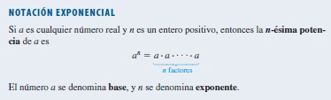
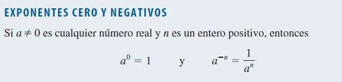
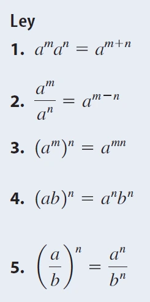
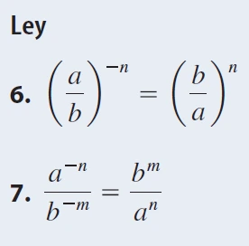
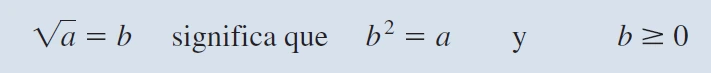
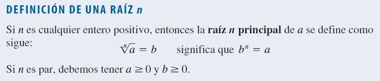
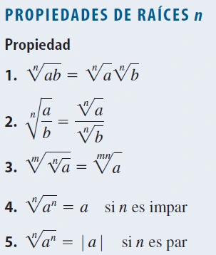
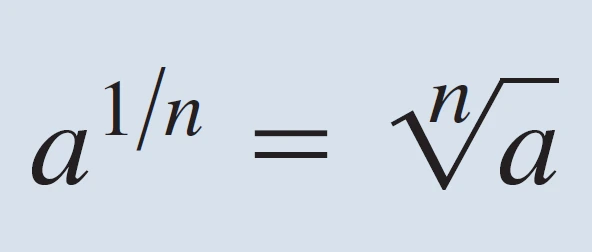
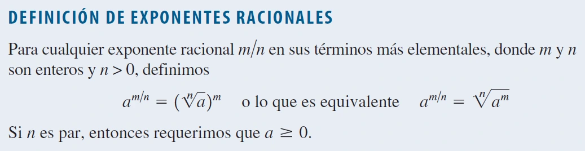

Los exponentes son números que indican cuántas veces se debe multiplicar una base por sí misma, mientras que los radicales representan el inverso de los exponentes, utilizados para expresar raíces de números. Ambos conceptos están relacionados, ya que una raíz puede interpretarse como un exponente fraccionario.
Exponentes enteros (negativos y positivos)
Un exponente indica cuántas veces se multiplica una base por sí misma.
Exponente positivo: Multiplica la base por sí misma repetidamente.
Exponente negativo: Toma el recíproco de la base y eleva al exponente positivo.

Ejemplos
Exponente positivo: 34 = 3 × 3 × 3 × 3 = 81
Exponente negativo: 5-2 = 1 / (5 × 5) = 1/25
Video de ayuda
Páginas de ayuda
Exponentes Cero y Negativos
El exponente cero establece que cualquier número (excepto el cero) elevado a la potencia de 0 es igual a 1. Por otro lado, un exponente negativo indica que debemos tomar el recíproco de la base elevada al exponente positivo correspondiente.

Ejemplos
Ejemplo: 70
70 = 1
Cualquier número elevado a la potencia de 0 (excepto el 0) es igual a 1.
Ejemplo: 4-3
4-3 = 1/43
43 = 4 × 4 × 4 = 64
1/64
Un exponente negativo significa que tomamos el recíproco de la base elevada al exponente positivo correspondiente.
Video de ayuda
Páginas de ayuda
Reglas para Trabajar con Exponentes
Las reglas de los exponentes permiten simplificar expresiones algebraicas que contienen potencias. Las principales incluyen la suma de exponentes cuando se multiplican potencias con la misma base y la resta de exponentes cuando se dividen.

Ejemplos
Producto de Potencias con la Misma Base
Ejemplo: 32 × 34
32 × 34 = 32+4 = 36
36 = 3 × 3 × 3 × 3 × 3 × 3 = 729
Si las bases son iguales, sumamos los exponentes al multiplicar.
Cociente de Potencias con la Misma Base
Ejemplo: 56 / 52
56 / 52 = 56-2 = 54
54 = 5 × 5 × 5 × 5 = 625
Si las bases son iguales, restamos los exponentes al dividir.
Video de ayuda
Páginas de ayuda
Leyes de Exponentes
Las leyes de exponentes son un conjunto de reglas que permiten simplificar operaciones con potencias, útiles en expresiones algebraicas. Entre estas, la suma de exponentes se aplica al multiplicar potencias con la misma base, y la resta de exponentes se aplica al dividir.

Ejemplos
Producto de Potencias con la Misma Base
Ejemplo: 23 × 24
23 × 24 = 23+4 = 27
27 = 2 × 2 × 2 × 2 × 2 × 2 × 2 = 128
Si las bases son iguales, sumamos los exponentes al multiplicar.
Cociente de Potencias con la Misma Base
Ejemplo: 105 / 102
105 / 102 = 105-2 = 103
103 = 10 × 10 × 10 = 1000
Si las bases son iguales, restamos los exponentes al dividir.
Video de ayuda
Páginas de ayuda
Notación científica
La notación científica es una forma compacta de expresar números muy grandes o muy pequeños, escribiendo un número entre 1 y 10 multiplicado por una potencia de 10. El exponente indica cuántas posiciones se mueve el punto decimal: si es positivo, el número es grande; si es negativo, es pequeño.
Ejemplos
Número Grande
Ejemplo: 5,300,000 en notación científica
Mueve el punto decimal 6 posiciones a la izquierda.
Coeficiente: 5.3, exponente: 6.
Resultado: 5,300,000 = 5.3 × 106
Se mueve el punto decimal hacia la izquierda y el exponente es positivo.
Número Pequeño
Ejemplo: 0.00042 en notación científica
Mueve el punto decimal 4 posiciones a la derecha.
Coeficiente: 4.2, exponente: -4.
Resultado: 0.00042 = 4.2 × 10-4
Se mueve el punto decimal hacia la derecha y el exponente es negativo.
Video de ayuda
Páginas de ayuda
Radicales
Un radical es una expresión matemática que representa la raíz de un número. El símbolo es √, y la raíz cuadrada es la más común, aunque también existen raíces cúbicas y otras. El número bajo el símbolo es el radicando, y el índice del radical indica qué tipo de raíz se está calculando. Si no se especifica el índice, se asume que es una raíz cuadrada.



Ejemplos
Ejemplo 1: Raíz Cuadrada
Se busca la raíz cuadrada de 16.
√16 = 4
La raíz cuadrada de 16 es 4, porque 4 × 4 = 16.
Ejemplo 2: Raíz Cúbica
Se busca la raíz cúbica de 27
√[3]27 = 3
La raíz cúbica de 27 es 3, porque 3 × 3 × 3 = 27.
Video de ayuda
Páginas de ayuda
Exponentes Racionales
Los exponentes racionales son aquellos que se expresan como una fracción. El numerador de la fracción indica la potencia, y el denominador indica la raíz. Esto permite calcular potencias y raíces de manera conjunta en una expresión matemática.


Ejemplos
Ejemplo 1: Exponente Racional Simpl
Se tiene la expresión \( 16^{1/2} \)
El denominador 2 indica que debemos calcular la raíz cuadrada de 16
La raíz cuadrada de 16 es 4
El denominador 2 indica la raíz cuadrada, y el resultado es 4, porque \( 4 \times 4 = 16 \)
Ejemplo 2: Exponente Racional Compuesto
Se tiene la expresión \( 8^{2/3} \)
El denominador 3 indica que primero debemos calcular la raíz cúbica de 8
La raíz cúbica de 8 es 2
Luego, elevamos este resultado al numerador 2. \( 2^2 = 4 \)
Primero calculamos la raíz cúbica de 8 (denominador) y luego elevamos al cuadrado (numerador).
Video de ayuda
Páginas de ayuda
Racionalización del denominador
La racionalización del denominador es un proceso que se utiliza para eliminar raíces (o radicales) del denominador de una fracción.
El objetivo es convertir el denominador en un número racional, ya que es común que, en matemáticas, se prefiera trabajar con denominadores racionales.
Métodos de racionalización
Para una raíz simple en el denominador: Multiplicamos tanto el numerador como el denominador por el mismo radical.
\[
\frac{a}{\sqrt{b}} \cdot \frac{\sqrt{b}}{\sqrt{b}} = \frac{a \sqrt{b}}{b}
\]
Para una expresión con suma o resta de raíces en el denominador: Utilizamos el conjugado del denominador para eliminar las raíces.
\[ \frac{a}{\sqrt{b} + \sqrt{c}} \cdot \frac{\sqrt{b} - \sqrt{c}}{\sqrt{b} - \sqrt{c}} = \frac{a (\sqrt{b} - \sqrt{c})}{(\sqrt{b})^2 - (\sqrt{c})^2} \] El producto de una expresión y su conjugado elimina los radicales debido a la diferencia de cuadrados.
Ejemplos
Racionalización de una raíz simple: \( \frac{5}{\sqrt{3}} \)
Multiplicamos el numerador y el denominador por \( \sqrt{3} \) para eliminar la raíz del denominador.
\[
\frac{5}{\sqrt{3}} \cdot \frac{\sqrt{3}}{\sqrt{3}} = \frac{5 \sqrt{3}}{3}
\]
\( \frac{5}{\sqrt{3}} = \frac{5 \sqrt{3}}{3} \)
Racionalización con conjugado: \( \frac{4}{\sqrt{2} + \sqrt{5}} \)
Multiplicamos el numerador y el denominador por el conjugado del denominador, que es \( \sqrt{2} - \sqrt{5} \)
\[ \frac{4}{\sqrt{2} + \sqrt{5}} \cdot \frac{\sqrt{2} - \sqrt{5}}{\sqrt{2} - \sqrt{5}} = \frac{4 (\sqrt{2} - \sqrt{5})}{(\sqrt{2})^2 - (\sqrt{5})^2} \]
Simplificamos el denominador aplicando la diferencia de cuadrados: \( (\sqrt{2})^2 = 2 \) y \( (\sqrt{5})^2 = 5 \), por lo tanto, \( 2 - 5 = -3 \)
El resultado es \[ \frac{4 (\sqrt{2} - \sqrt{5})}{-3} = \frac{4\sqrt{2} - 4\sqrt{5}}{-3} \]
Resultado: \( \frac{4}{\sqrt{2} + \sqrt{5}} = \frac{4 \sqrt{2} - 4 \sqrt{5}}{-3} \)